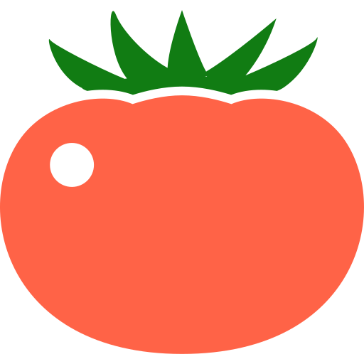

ポモドーロチャイム
現在時刻
ただいまの時間は
です。
次のまであと分
ポモドーロ・テクニックとは？
時間管理術のひとつ。 1980年代にイタリア人のフランチェスコ・シリロによって考案された。
手順
- 達成しようとするタスクを選ぶ
- キッチンタイマーで25分を設定する
- タイマーが鳴るまでタスクに集中する
- 少し休憩する（5分程度）
- ステップ2～4を4回繰り返したら、少し長めに休憩する（15分～30分）
引用：ウィキペディアの執筆者，2021，「ポモドーロ・テクニック」『ウィキペディア日本語版』，（2021年5月4日取得）
このサイトではポモドーロタイマーが常時作動しています。毎時0～25分が作業時間、25～30分が休憩時間、30～55分が作業時間、55～0分が休憩時間のタイマーを繰り返しています。
自分でタイマーをセットするのとは違い、学校のチャイムのように毎日決まった時間に動いているためサイトを開けばすぐに利用できます。
ただし長めの休憩時間を考慮していないため、その場合は作業時間1回分まるごと休憩を入れることをおすすめします。